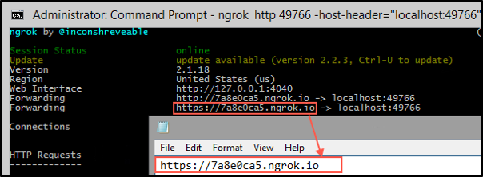

Download mysql-installer-community-5.7.17.0.msi (the biggest Windowsbinary)

Launch and install with the Default options.
public static void Main(String args[]){
System.out.println("Hello World");
}
Welcome1.emp.sql.C:\Windows\System 32\drivers\etc\hosts).127.0.0.1 mysql legacy.oktaice.comopp_win.zip file under C:\Users\Administrator\Downloads and unzip its contents.C:\.tomcat / Tra!nme4321. url:
clientId:
clientSecret:
redirectUri:
serviceClientId:
serviceClientSecret:
authorizationServerId:
accessToken:
C:\Users\Administrator\Downloads and unzip its contents.C:\labs.C:\labs\apimaster.C:\Users\Administrator\Downloads and unzip its contents.C:\labs.SAML tracer.http://bit.ly/rtestclientTra!nme4321 as password.employees table, and confirm that the data is displayed.tomcat / Tra!nme4321.